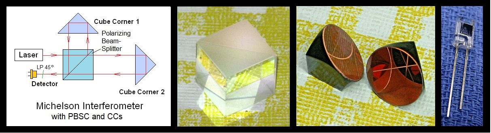

Copyright © 1994-2021
Sam Goldwasser
--- All Rights Reserved ---
Mich3 consists of a 12.7 mm (1/2 inch) polarizing beam-splitter cube good for 600-670 nm, a pair 12.7 mm (1/2 inch) cube-corner retro-reflector trihedral prisms, a silicon photodiode (PD) to use as a detector, and a piece of linear polarizer (LP) sheet to be used for both forcing a random polarized HeNe laser to output a linearly polarized beam, and to combine the output of the interferometer on the PD.
The user must provide a suitable laser, mounting for the parts (could be 3-D printed!), and detector electronics like an oscilloscope.
Many types of lasers can be used for interferometry. For some applications, incorhere or even white light sources may be adequate. But to be convenient for basic experiments, a high quality laser is required.
The most common type of laser useful for these experiments is a low power red (633 nm) Helium-Neon laser, abbreviated by laser jocks as simply "HeNe". It should be single spatial mode with a "TEM00" beam profile and may be either linear or random polarized, though what can be done is affected by the polarization. The output beam should also be reasonably well collimated - it should not change diameter very much over reasonable distances.
The montage below shows the most basic interferometer layout and typical parts in this kit (except for the LP).

Three Typical Configurations:
Rather than going into great detail here, it is best to refer to Michelson Interferometer Experimental Setup (MIPM) which covers the basics as well as the details of the various configurations and types of lasers.
-- end V1.00 --